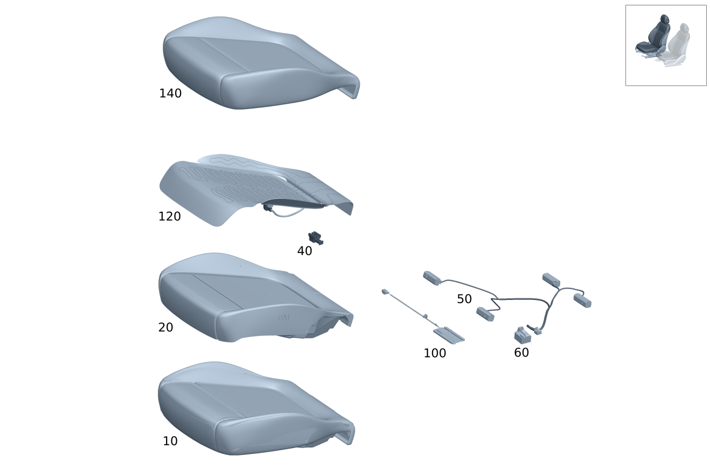

| № | Артикул | Название | Кол. | Примечание | Ограничение |
|---|---|---|---|---|---|
| 10 | A 254 910 66 01 | Подушка сиденья водителя | 1 | Подушка сиденья система распознавания занятости сиденья система определения веса переднего сиденья справа Рулевое управление: Влево | 7U3+U10+250A+(P65/221/241) |
| 10 | A 206 910 14 08 | Подушка сиденья водителя | 1 | Подушка сиденья система распознавания занятости сиденья система определения веса переднего сиденья справа Рулевое управление: Влево | 7U3+U10+250A+(P65/221/241) |
| 10 | A 206 910 14 08 | Подушка сиденья водителя | 1 | Подушка сиденья система распознавания занятости сиденья система определения веса переднего сиденья справа Рулевое управление: Влево | 7U3+U10+250A+(P65/241) |
| 10 | A 254 910 68 01 | Подушка сиденья водителя | 1 | Подушка сиденья система распознавания занятости сиденья система определения веса переднего сиденья справа Рулевое управление: Влево | 7U3+U10+250A+(P65/221/241)+401 |
| 10 | A 206 910 16 08 | Подушка сиденья водителя | 1 | Подушка сиденья система распознавания занятости сиденья система определения веса переднего сиденья справа Рулевое управление: Влево | 7U3+U10+250A+(P65/221/241)+401 |
| 10 | A 206 910 16 08 | Подушка сиденья водителя | 1 | Подушка сиденья система распознавания занятости сиденья система определения веса переднего сиденья справа Рулевое управление: Влево | 7U3+U10+250A+(P65/241)+401 |
| 10 | A 206 910 44 08 | Подушка сиденья водителя | 1 | Подушка сиденья система распознавания занятости сиденья система определения веса переднего сиденья справа Рулевое управление: Влево | 7U3+U10+650A |
| 10 | A 206 910 18 08 | Подушка сиденья водителя | 1 | Подушка сиденья система распознавания занятости сиденья система определения веса переднего сиденья справа Рулевое управление: Влево | 7U3+U10+650A+(P65/221/241) |
| 10 | A 206 910 18 08 | Подушка сиденья водителя | 1 | Подушка сиденья система распознавания занятости сиденья система определения веса переднего сиденья справа Рулевое управление: Влево | 7U3+U10+650A+(P65/241) |
| 10 | A 254 910 72 01 | Подушка сиденья водителя | 1 | Подушка сиденья система распознавания занятости сиденья система определения веса переднего сиденья справа Рулевое управление: Влево | 7U3+U10+850A+(P65/221/241) |
| 10 | A 206 910 20 08 | Подушка сиденья водителя | 1 | Подушка сиденья система распознавания занятости сиденья система определения веса переднего сиденья справа Рулевое управление: Влево | 7U3+U10+850A+(P65/221/241) |
| 10 | A 206 910 20 08 | Подушка сиденья водителя | 1 | Подушка сиденья система распознавания занятости сиденья система определения веса переднего сиденья справа Рулевое управление: Влево | 7U3+U10+850A+(P65/241) |
| 10 | A 254 910 74 01 | Подушка сиденья водителя | 1 | Подушка сиденья система распознавания занятости сиденья система определения веса переднего сиденья справа Рулевое управление: Влево | 7U3+U10+850A+(P65/221/241)+401 |
| 10 | A 206 910 26 08 | Подушка сиденья водителя | 1 | Подушка сиденья система распознавания занятости сиденья система определения веса переднего сиденья справа Рулевое управление: Влево | 7U3+U10+850A+(P65/221/241)+401 |
| 10 | A 206 910 26 08 | Подушка сиденья водителя | 1 | Подушка сиденья система распознавания занятости сиденья система определения веса переднего сиденья справа Рулевое управление: Влево | 7U3+U10+850A+(P65/241)+401 |
| 10 | A 254 910 76 01 | Подушка сиденья водителя | 1 | Подушка сиденья система распознавания занятости сиденья система определения веса переднего сиденья справа Рулевое управление: Влево | 7U3+U10+870A+(P65/221/241) |
| 10 | A 206 910 22 08 | Подушка сиденья водителя | 1 | Подушка сиденья система распознавания занятости сиденья система определения веса переднего сиденья справа Рулевое управление: Влево | 7U3+U10+870A+(P65/221/241) |
| 10 | A 206 910 22 08 | Подушка сиденья водителя | 1 | Подушка сиденья система распознавания занятости сиденья система определения веса переднего сиденья справа Рулевое управление: Влево | 7U3+U10+870A+(P65/241) |
| 10 | A 254 910 78 01 | Подушка сиденья водителя | 1 | Подушка сиденья система распознавания занятости сиденья система определения веса переднего сиденья справа Рулевое управление: Влево | 7U3+U10+870A+(P65/221/241)+401 |
| 10 | A 206 910 28 08 | Подушка сиденья водителя | 1 | Подушка сиденья система распознавания занятости сиденья система определения веса переднего сиденья справа Рулевое управление: Влево | 7U3+U10+870A+(P65/221/241)+401 |
| 10 | A 206 910 28 08 | Подушка сиденья водителя | 1 | Подушка сиденья система распознавания занятости сиденья система определения веса переднего сиденья справа Рулевое управление: Влево | 7U3+U10+870A+(P65/241)+401 |
| 10 | A 206 910 44 07 | Подушка сиденья водителя (DRIVER SEAT CUSHION) | 1 | Подушка сиденья система распознавания занятости сиденья система определения веса переднего сиденья справа Рулевое управление: Влево | 000A+7U1+U10+873 |
| 10 | A 206 910 46 06 | Подушка сиденья водителя (DRIVER SEAT CUSHION) | 1 | Подушка сиденья система распознавания занятости сиденья система определения веса переднего сиденья справа Рулевое управление: Влево | 300A+7U2+873+U10 |
| 10 | A 206 910 47 06 | Подушка сиденья водителя | 1 | Подушка сиденья система распознавания занятости сиденья система определения веса переднего сиденья справа Рулевое управление: Влево | 200A+7U2+91B+U10+873 |
| 10 | A 206 910 48 06 | Подушка сиденья водителя (DRIVER SEAT CUSHION) | 1 | Подушка сиденья система распознавания занятости сиденья система определения веса переднего сиденья справа Рулевое управление: Влево | 300A+7U2+U10+(P65/242/222)+873 |
| 10 | A 206 910 49 06 | Подушка сиденья водителя | 1 | Подушка сиденья система распознавания занятости сиденья система определения веса переднего сиденья справа Рулевое управление: Влево | 200A+7U2+91B+U10+(P65/242/222)+873 |
| 10 | A 206 910 50 06 | Подушка сиденья водителя (DRIVER SEAT CUSHION) | 1 | Подушка сиденья система распознавания занятости сиденья система определения веса переднего сиденья справа Рулевое управление: Влево | 200A+7U2+401+U10+(P65/242/222) |
| 10 | A 206 910 87 06 | Подушка сиденья водителя (DRIVER SEAT CUSHION) | 1 | Подушка сиденья система распознавания занятости сиденья система определения веса переднего сиденья справа Рулевое управление: Влево | 100A+7U2+873+U10 |
| 10 | A 206 910 89 06 | Подушка сиденья водителя (DRIVER SEAT CUSHION) | 1 | Подушка сиденья система распознавания занятости сиденья система определения веса переднего сиденья справа Рулевое управление: Влево | 100A+7U3+873+U10 |
| 10 | A 206 910 90 06 | Подушка сиденья водителя | 1 | Подушка сиденья система распознавания занятости сиденья система определения веса переднего сиденья справа Рулевое управление: Влево | 200A+7U3+91B+873+U10 |
| 10 | A 206 910 91 06 | Подушка сиденья водителя (DRIVER SEAT CUSHION) | 1 | Подушка сиденья система распознавания занятости сиденья система определения веса переднего сиденья справа Рулевое управление: Влево | 100A+7U2+U10+(P65/242/222)+873 |
| 10 | A 206 910 93 06 | Подушка сиденья водителя (DRIVER SEAT CUSHION) | 1 | Подушка сиденья система распознавания занятости сиденья система определения веса переднего сиденья справа Рулевое управление: Влево | 100A+7U3+U10+(P65/242/222)+873 |
| 10 | A 206 910 94 06 | Подушка сиденья водителя (DRIVER SEAT CUSHION) | 1 | Подушка сиденья система распознавания занятости сиденья система определения веса переднего сиденья справа Рулевое управление: Влево | 200A+7U3+91B+U10+(P65/242/222)+873 |
| 10 | A 206 910 96 06 | Подушка сиденья водителя (DRIVER SEAT CUSHION) | 1 | Подушка сиденья система распознавания занятости сиденья система определения веса переднего сиденья справа Рулевое управление: Влево | 200A+7U3+401+U10+(P65/242/222) |
| 10 | A 206 910 98 06 | Подушка сиденья водителя (DRIVER SEAT CUSHION) | 1 | Подушка сиденья система распознавания занятости сиденья система определения веса переднего сиденья справа Рулевое управление: Влево | 100A+7U2+401+U10+(P65/242/222) |
| 10 | A 206 910 99 06 | Подушка сиденья водителя (DRIVER SEAT CUSHION) | 1 | Подушка сиденья система распознавания занятости сиденья система определения веса переднего сиденья справа Рулевое управление: Влево | 100A+7U3+401+U10+(P65/242/222) |
| 10 | A 206 910 88 06 | Подушка сиденья водителя | 1 | Подушка сиденья система распознавания занятости сиденья система определения веса переднего сиденья справа Рулевое управление: Влево | 600A+7U3+873+U10 |
| 10 | A 206 910 92 06 | Подушка сиденья водителя (DRIVER SEAT CUSHION) | 1 | Подушка сиденья система распознавания занятости сиденья система определения веса переднего сиденья справа Рулевое управление: Влево | 600A+7U3+U10+(P65/242/222)+873 |
| 10 | A 206 910 95 06 | Подушка сиденья водителя (DRIVER SEAT CUSHION) | 1 | Подушка сиденья система распознавания занятости сиденья система определения веса переднего сиденья справа Рулевое управление: Влево | 800A+7U3+91B+U10+(P65/242/222)+873 |
| 10 | A 206 910 97 06 | Подушка сиденья водителя (DRIVER SEAT CUSHION) | 1 | Подушка сиденья система распознавания занятости сиденья система определения веса переднего сиденья справа Рулевое управление: Влево | 800A+7U3+401+U10+(P65/242/222) |
| 10 | A 206 910 94 07 | Подушка сиденья водителя | 1 | Подушка сиденья система распознавания занятости сиденья система определения веса переднего сиденья справа Рулевое управление: Влево | 555+873+U10+650A |
| 10 | A 206 910 96 07 | Подушка сиденья водителя | 1 | Подушка сиденья система распознавания занятости сиденья система определения веса переднего сиденья справа Рулевое управление: Влево | 555+873+U10+250A |
| 10 | A 206 910 98 07 | Подушка сиденья водителя | 1 | Подушка сиденья система распознавания занятости сиденья система определения веса переднего сиденья справа Рулевое управление: Влево | 555+401+U10+250A |
| 10 | A 206 910 02 08 | Подушка сиденья водителя | 1 | Подушка сиденья система распознавания занятости сиденья система определения веса переднего сиденья справа Рулевое управление: Влево | 555+873+U10+(850A/870A) |
| 10 | A 206 910 04 08 | Подушка сиденья водителя | 1 | Подушка сиденья система распознавания занятости сиденья система определения веса переднего сиденья справа Рулевое управление: Влево | 555+401+U10+(850A/870A) |
| 10 | A 206 910 45 07 | Подушка сиденья водителя (DRIVER SEAT CUSHION) | 1 | Подушка сиденья система распознавания занятости сиденья система определения веса переднего сиденья справа Рулевое управление: Влево | 000A+7U1+U10+873+803+053/000A+7U1+U10+873+804 |
| 10 | A 206 910 45 07 | Подушка сиденья водителя (DRIVER SEAT CUSHION) | 1 | Подушка сиденья система распознавания занятости сиденья система определения веса переднего сиденья справа Рулевое управление: Влево | 7U1+U10+000A+873 |
| 10 | A 206 910 45 07 | Подушка сиденья водителя (DRIVER SEAT CUSHION) | 1 | Подушка сиденья система распознавания занятости сиденья система определения веса переднего сиденья справа Рулевое управление: Влево [-] Адаптировать при монтаже | 7U1+U10+000A |
| 10 | A 206 910 18 07 | Подушка сиденья водителя (DRIVER SEAT CUSHION) | 1 | Подушка сиденья система распознавания занятости сиденья система определения веса переднего сиденья справа Рулевое управление: Влево | 300A+7U2+873+U10+803+053/300A+7U2+873+U10+804 |
| 10 | A 206 910 18 07 | Подушка сиденья водителя (DRIVER SEAT CUSHION) | 1 | Подушка сиденья система распознавания занятости сиденья система определения веса переднего сиденья справа Рулевое управление: Влево | 7U2+U10+300A+873 |
| 10 | A 206 910 18 07 | Подушка сиденья водителя (DRIVER SEAT CUSHION) | 1 | Подушка сиденья система распознавания занятости сиденья система определения веса переднего сиденья справа Рулевое управление: Влево [-] Адаптировать при монтаже | 7U2+U10+300A |
| 10 | A 206 910 22 07 | Подушка сиденья водителя | 1 | Подушка сиденья система распознавания занятости сиденья система определения веса переднего сиденья справа Рулевое управление: Влево | 200A+7U2+91B+U10+873+803+053/200A+7U2+91B+U10+873+804 |
| 10 | A 206 910 22 07 | Подушка сиденья водителя | 1 | Подушка сиденья система распознавания занятости сиденья система определения веса переднего сиденья справа Рулевое управление: Влево | 7U2+U10+200A+873+91B |
| 10 | A 206 910 22 07 | Подушка сиденья водителя | 1 | Подушка сиденья система распознавания занятости сиденья система определения веса переднего сиденья справа Рулевое управление: Влево [-] Адаптировать при монтаже | 7U2+U10+200A+91B |
| 10 | A 206 910 24 07 | Подушка сиденья водителя (DRIVER SEAT CUSHION) | 1 | Подушка сиденья система распознавания занятости сиденья система определения веса переднего сиденья справа Рулевое управление: Влево | 300A+7U2+U10+873+P65+803+053/300A+7U2+U10+873+P65+804/300A+7U2+U10+873+242+803+053/300A+7U2+U10+873+242+804/300A+7U2+U10+873+222+803+053/300A+7U2+U10+873+222+804 |
| 10 | A 206 910 24 07 | Подушка сиденья водителя (DRIVER SEAT CUSHION) | 1 | Подушка сиденья система распознавания занятости сиденья система определения веса переднего сиденья справа Рулевое управление: Влево | 7U2+U10+300A+873+(P65/242/222) |
| 10 | A 206 910 24 07 | Подушка сиденья водителя (DRIVER SEAT CUSHION) | 1 | Подушка сиденья система распознавания занятости сиденья система определения веса переднего сиденья справа Рулевое управление: Влево [-] Адаптировать при монтаже | 7U2+U10+300A+(P65/242/222) |
| 10 | A 206 910 24 07 | Подушка сиденья водителя (DRIVER SEAT CUSHION) | 1 | Подушка сиденья система распознавания занятости сиденья система определения веса переднего сиденья справа Рулевое управление: Влево [-] Адаптировать при монтаже | 7U2+U10+300A+(P65/242) |
| 10 | A 254 910 96 01 | Подушка сиденья водителя (DRIVER SEAT CUSHION) | 1 | Подушка сиденья система распознавания занятости сиденья система определения веса переднего сиденья справа Рулевое управление: Влево [-] Адаптировать при монтаже | 7U2+U10+300A+(P65/242) |
| 10 | A 206 910 28 07 | Подушка сиденья водителя | 1 | Подушка сиденья система распознавания занятости сиденья система определения веса переднего сиденья справа Рулевое управление: Влево | 200A+7U2+91B+U10+873+P65+803+053/200A+7U2+91B+U10+873+P65+804/200A+7U2+91B+U10+873+242+803+053/200A+7U2+91B+U10+873+242+804/200A+7U2+91B+U10+873+222+803+053/200A+7U2+91B+U10+873+222+804 |
| 10 | A 206 910 28 07 | Подушка сиденья водителя | 1 | Подушка сиденья система распознавания занятости сиденья система определения веса переднего сиденья справа Рулевое управление: Влево | 7U2+U10+200A+873+91B+(P65/242/222) |
| 10 | A 206 910 28 07 | Подушка сиденья водителя | 1 | Подушка сиденья система распознавания занятости сиденья система определения веса переднего сиденья справа Рулевое управление: Влево [-] Адаптировать при монтаже | 7U2+U10+200A+91B+(P65/242/222) |
| 10 | A 206 910 28 07 | Подушка сиденья водителя | 1 | Подушка сиденья система распознавания занятости сиденья система определения веса переднего сиденья справа Рулевое управление: Влево [-] Адаптировать при монтаже | 7U2+U10+200A+91B+(P65/242) |
| 10 | A 254 910 06 02 | Подушка сиденья водителя | 1 | Подушка сиденья система распознавания занятости сиденья система определения веса переднего сиденья справа Рулевое управление: Влево [-] Адаптировать при монтаже | 7U2+U10+200A+91B+(P65/242) |
| 10 | A 206 910 19 07 | Подушка сиденья водителя (DRIVER SEAT CUSHION) | 1 | Подушка сиденья система распознавания занятости сиденья система определения веса переднего сиденья справа Рулевое управление: Влево | 100A+7U2+873+U10+803+053/100A+7U2+873+U10+804 |
| 10 | A 206 910 19 07 | Подушка сиденья водителя (DRIVER SEAT CUSHION) | 1 | Подушка сиденья система распознавания занятости сиденья система определения веса переднего сиденья справа Рулевое управление: Влево | 7U2+U10+100A+873 |
| 10 | A 206 910 19 07 | Подушка сиденья водителя (DRIVER SEAT CUSHION) | 1 | Подушка сиденья система распознавания занятости сиденья система определения веса переднего сиденья справа Рулевое управление: Влево [-] Адаптировать при монтаже | 7U2+U10+100A |
| 10 | A 206 910 21 07 | Подушка сиденья водителя (DRIVER SEAT CUSHION) | 1 | Подушка сиденья система распознавания занятости сиденья система определения веса переднего сиденья справа Рулевое управление: Влево | 100A+7U3+873+U10+803+053/100A+7U3+873+U10+804 |
| 10 | A 206 910 21 07 | Подушка сиденья водителя (DRIVER SEAT CUSHION) | 1 | Подушка сиденья система распознавания занятости сиденья система определения веса переднего сиденья справа Рулевое управление: Влево | 7U3+U10+100A+873 |
| 10 | A 206 910 21 07 | Подушка сиденья водителя (DRIVER SEAT CUSHION) | 1 | Подушка сиденья система распознавания занятости сиденья система определения веса переднего сиденья справа Рулевое управление: Влево [-] Адаптировать при монтаже | 7U3+U10+100A |
| 10 | A 206 910 23 07 | Подушка сиденья водителя | 1 | Подушка сиденья система распознавания занятости сиденья система определения веса переднего сиденья справа Рулевое управление: Влево | 200A+7U3+91B+873+U10+803+053/200A+7U3+91B+873+U10+804 |
| 10 | A 206 910 23 07 | Подушка сиденья водителя | 1 | Подушка сиденья система распознавания занятости сиденья система определения веса переднего сиденья справа Рулевое управление: Влево | 7U3+U10+200A+873+91B |
| 10 | A 206 910 23 07 | Подушка сиденья водителя | 1 | Подушка сиденья система распознавания занятости сиденья система определения веса переднего сиденья справа Рулевое управление: Влево [-] Адаптировать при монтаже | 7U3+U10+200A+91B |
| 10 | A 206 910 25 07 | Подушка сиденья водителя (DRIVER SEAT CUSHION) | 1 | Подушка сиденья система распознавания занятости сиденья система определения веса переднего сиденья справа Рулевое управление: Влево | 100A+7U2+U10+873+P65+803+053/100A+7U2+U10+873+P65+804/100A+7U2+U10+873+242+803+053/100A+7U2+U10+873+242+804/100A+7U2+U10+873+222+803+053/100A+7U2+U10+873+222+804 |
| 10 | A 206 910 25 07 | Подушка сиденья водителя (DRIVER SEAT CUSHION) | 1 | Подушка сиденья система распознавания занятости сиденья система определения веса переднего сиденья справа Рулевое управление: Влево [-] Адаптировать при монтаже | 7U2+U10+100A+(P65/242/222) |
| 10 | A 254 910 98 01 | Подушка сиденья водителя (DRIVER SEAT CUSHION) | 1 | Подушка сиденья система распознавания занятости сиденья система определения веса переднего сиденья справа Рулевое управление: Влево [-] Адаптировать при монтаже | 7U2+U10+100A+(P65/242/222) |
| 10 | A 206 910 27 07 | Подушка сиденья водителя (DRIVER SEAT CUSHION) | 1 | Подушка сиденья система распознавания занятости сиденья система определения веса переднего сиденья справа Рулевое управление: Влево | 100A+7U3+U10+873+P65+803+053/100A+7U3+U10+873+P65+804/100A+7U3+U10+873+242+803+053/100A+7U3+U10+873+242+804/100A+7U3+U10+873+222+803+053/100A+7U3+U10+873+222+804 |
| 10 | A 206 910 27 07 | Подушка сиденья водителя (DRIVER SEAT CUSHION) | 1 | Подушка сиденья система распознавания занятости сиденья система определения веса переднего сиденья справа Рулевое управление: Влево | 7U3+U10+100A+873+(P65/242/222) |
| 10 | A 206 910 27 07 | Подушка сиденья водителя (DRIVER SEAT CUSHION) | 1 | Подушка сиденья система распознавания занятости сиденья система определения веса переднего сиденья справа Рулевое управление: Влево [-] Адаптировать при монтаже | 7U3+U10+100A+(P65/242/222) |
| 10 | A 254 910 04 02 | Подушка сиденья водителя (DRIVER SEAT CUSHION) | 1 | Подушка сиденья система распознавания занятости сиденья система определения веса переднего сиденья справа Рулевое управление: Влево [-] Адаптировать при монтаже | 7U3+U10+100A+(P65/242/222) |
| 10 | A 206 910 29 07 | Подушка сиденья водителя (DRIVER SEAT CUSHION) | 1 | Подушка сиденья система распознавания занятости сиденья система определения веса переднего сиденья справа Рулевое управление: Влево | 200A+7U3+91B+U10+873+P65+803+053/200A+7U3+91B+U10+873+P65+804/200A+7U3+91B+U10+873+242+803+053/200A+7U3+91B+U10+873+242+804/200A+7U3+91B+U10+873+222+803+053/200A+7U3+91B+U10+873+222+804 |
| 10 | A 206 910 29 07 | Подушка сиденья водителя (DRIVER SEAT CUSHION) | 1 | Подушка сиденья система распознавания занятости сиденья система определения веса переднего сиденья справа Рулевое управление: Влево | 7U3+U10+200A+873+91B+(P65/242/222) |
| 10 | A 206 910 29 07 | Подушка сиденья водителя (DRIVER SEAT CUSHION) | 1 | Подушка сиденья система распознавания занятости сиденья система определения веса переднего сиденья справа Рулевое управление: Влево [-] Адаптировать при монтаже | 7U3+U10+200A+91B+(P65/242/222) |
| 10 | A 206 910 29 07 | Подушка сиденья водителя (DRIVER SEAT CUSHION) | 1 | Подушка сиденья система распознавания занятости сиденья система определения веса переднего сиденья справа Рулевое управление: Влево [-] Адаптировать при монтаже | 7U3+U10+200A+91B+(P65/242) |
| 10 | A 254 910 08 02 | Подушка сиденья водителя (DRIVER SEAT CUSHION) | 1 | Подушка сиденья система распознавания занятости сиденья система определения веса переднего сиденья справа Рулевое управление: Влево [-] Адаптировать при монтаже | 7U3+U10+200A+91B+(P65/242) |
| 10 | A 206 910 32 07 | Подушка сиденья водителя | 1 | Подушка сиденья система распознавания занятости сиденья система определения веса переднего сиденья справа Рулевое управление: Влево | 200A+7U3+401+U10+P65+803+053/200A+7U3+401+U10+P65+804/200A+7U3+401+U10+242+803+053/200A+7U3+401+U10+242+804/200A+7U3+401+U10+222+803+053/200A+7U3+401+U10+222+804 |
| 10 | A 206 910 34 07 | Подушка сиденья водителя (DRIVER SEAT CUSHION) | 1 | Подушка сиденья система распознавания занятости сиденья система определения веса переднего сиденья справа Рулевое управление: Влево | 100A+7U2+401+U10+(P65/242/222)+((803+053)/804) |
| 10 | A 206 910 35 07 | Подушка сиденья водителя (DRIVER SEAT CUSHION) | 1 | Подушка сиденья система распознавания занятости сиденья система определения веса переднего сиденья справа Рулевое управление: Влево | 100A+7U3+401+U10+(P65/242/222)+((803+053)/804) |
| 10 | A 206 910 20 07 | Подушка сиденья водителя | 1 | Подушка сиденья система распознавания занятости сиденья система определения веса переднего сиденья справа Рулевое управление: Влево | 600A+7U3+873+U10+803+053/600A+7U3+873+U10+804 |
| 10 | A 206 910 20 07 | Подушка сиденья водителя | 1 | Подушка сиденья система распознавания занятости сиденья система определения веса переднего сиденья справа Рулевое управление: Влево | 7U3+U10+600A+873 |
| 10 | A 206 910 20 07 | Подушка сиденья водителя | 1 | Подушка сиденья система распознавания занятости сиденья система определения веса переднего сиденья справа Рулевое управление: Влево [-] Адаптировать при монтаже | 7U3+U10+600A |
| 10 | A 206 910 26 07 | Подушка сиденья водителя | 1 | Подушка сиденья система распознавания занятости сиденья система определения веса переднего сиденья справа Рулевое управление: Влево | 600A+7U3+U10+873+P65+803+053/600A+7U3+U10+873+P65+804/600A+7U3+U10+873+242+803+053/600A+7U3+U10+873+242+804/600A+7U3+U10+873+222+803+053/600A+7U3+U10+873+222+804 |
| 10 | A 206 910 26 07 | Подушка сиденья водителя | 1 | Подушка сиденья система распознавания занятости сиденья система определения веса переднего сиденья справа Рулевое управление: Влево | 7U3+U10+600A+873+(P65/242/222) |
| 10 | A 206 910 26 07 | Подушка сиденья водителя | 1 | Подушка сиденья система распознавания занятости сиденья система определения веса переднего сиденья справа Рулевое управление: Влево [-] Адаптировать при монтаже | 7U3+U10+600A+(P65/242/222) |
| 10 | A 206 910 26 07 | Подушка сиденья водителя | 1 | Подушка сиденья система распознавания занятости сиденья система определения веса переднего сиденья справа Рулевое управление: Влево [-] Адаптировать при монтаже | 7U3+U10+600A+(P65/242) |
| 10 | A 254 910 02 02 | Подушка сиденья водителя | 1 | Подушка сиденья система распознавания занятости сиденья система определения веса переднего сиденья справа Рулевое управление: Влево [-] Адаптировать при монтаже | 7U3+U10+600A+(P65/242) |
| 10 | A 206 910 30 07 | Подушка сиденья водителя (DRIVER SEAT CUSHION) | 1 | Подушка сиденья система распознавания занятости сиденья система определения веса переднего сиденья справа Рулевое управление: Влево | 800A+7U3+91B+U10+873+P65+803+053/800A+7U3+91B+U10+873+P65+804/800A+7U3+91B+U10+873+242+803+053/800A+7U3+91B+U10+873+242+804/800A+7U3+91B+U10+873+222+803+053/800A+7U3+91B+U10+873+222+804 |
| 10 | A 206 910 30 07 | Подушка сиденья водителя (DRIVER SEAT CUSHION) | 1 | Подушка сиденья система распознавания занятости сиденья система определения веса переднего сиденья справа Рулевое управление: Влево | 7U3+U10+800A+873+91B+(P65/242/222) |
| 10 | A 206 910 30 07 | Подушка сиденья водителя (DRIVER SEAT CUSHION) | 1 | Подушка сиденья система распознавания занятости сиденья система определения веса переднего сиденья справа Рулевое управление: Влево [-] Адаптировать при монтаже | 7U3+U10+800A+91B+(P65/242/222) |
| 10 | A 206 910 30 07 | Подушка сиденья водителя (DRIVER SEAT CUSHION) | 1 | Подушка сиденья система распознавания занятости сиденья система определения веса переднего сиденья справа Рулевое управление: Влево [-] Адаптировать при монтаже | 7U3+U10+800A+91B+(P65/242) |
| 10 | A 254 910 10 02 | Подушка сиденья водителя (DRIVER SEAT CUSHION) | 1 | Подушка сиденья система распознавания занятости сиденья система определения веса переднего сиденья справа Рулевое управление: Влево [-] Адаптировать при монтаже | 7U3+U10+800A+91B+(P65/242) |
| 10 | A 206 910 33 07 | Подушка сиденья водителя | 1 | Подушка сиденья система распознавания занятости сиденья система определения веса переднего сиденья справа Рулевое управление: Влево | 800A+7U3+401+U10+P65+803+053/800A+7U3+401+U10+P65+804/800A+7U3+401+U10+242+803+053/800A+7U3+401+U10+242+804/800A+7U3+401+U10+222+803+053/800A+7U3+401+U10+222+804 |
| 10 | A 206 910 34 07 | Подушка сиденья водителя (DRIVER SEAT CUSHION) | 1 | Подушка сиденья система распознавания занятости сиденья система определения веса переднего сиденья справа Рулевое управление: Влево | 7U2+U10+100A+(P65/242/222)+401 |
| 10 | A 254 910 18 02 | Подушка сиденья водителя (DRIVER SEAT CUSHION) | 1 | Подушка сиденья система распознавания занятости сиденья система определения веса переднего сиденья справа Рулевое управление: Влево | 7U2+U10+100A+(P65/242/222)+401 |
| 10 | A 206 910 31 07 | Подушка сиденья водителя | 1 | Подушка сиденья система распознавания занятости сиденья система определения веса переднего сиденья справа Рулевое управление: Влево | 7U2+U10+200A+(P65/242/222)+401 |
| 10 | A 254 910 12 02 | Подушка сиденья водителя | 1 | Подушка сиденья система распознавания занятости сиденья система определения веса переднего сиденья справа Рулевое управление: Влево [414] СТАРУЮ ДЕТАЛЬ УСТАНАВЛИВАТЬ БОЛЬШЕ НЕ РАЗРЕШАЕТСЯ | 7U2+U10+200A+(P65/242/222)+401 |
| 10 | A 254 910 64 02 | Подушка сиденья водителя | 1 | Подушка сиденья система распознавания занятости сиденья система определения веса переднего сиденья справа Рулевое управление: Влево | 7U2+U10+200A+(P65/242/222)+401 |
| 10 | A 206 910 35 07 | Подушка сиденья водителя (DRIVER SEAT CUSHION) | 1 | Подушка сиденья система распознавания занятости сиденья система определения веса переднего сиденья справа Рулевое управление: Влево | 7U3+U10+100A+(P65/242/222)+401 |
| 10 | A 254 910 20 02 | Подушка сиденья водителя (DRIVER SEAT CUSHION) | 1 | Подушка сиденья система распознавания занятости сиденья система определения веса переднего сиденья справа Рулевое управление: Влево | 7U3+U10+100A+(P65/242/222)+401 |
| 10 | A 206 910 32 07 | Подушка сиденья водителя | 1 | Подушка сиденья система распознавания занятости сиденья система определения веса переднего сиденья справа Рулевое управление: Влево | 7U3+U10+200A+(P65/242/222)+401 |
| 10 | A 254 910 14 02 | Подушка сиденья водителя | 1 | Подушка сиденья система распознавания занятости сиденья система определения веса переднего сиденья справа Рулевое управление: Влево [414] СТАРУЮ ДЕТАЛЬ УСТАНАВЛИВАТЬ БОЛЬШЕ НЕ РАЗРЕШАЕТСЯ | 7U3+U10+200A+(P65/242/222)+401 |
| 10 | A 254 910 66 02 | Подушка сиденья водителя (DRIVER SEAT CUSHION) | 1 | Подушка сиденья система распознавания занятости сиденья система определения веса переднего сиденья справа Рулевое управление: Влево | 7U3+U10+200A+(P65/242/222)+401 |
| 10 | A 206 910 33 07 | Подушка сиденья водителя | 1 | Подушка сиденья система распознавания занятости сиденья система определения веса переднего сиденья справа Рулевое управление: Влево | 7U3+U10+800A+(P65/242/222)+401 |
| 10 | A 206 910 33 07 | Подушка сиденья водителя | 1 | Подушка сиденья система распознавания занятости сиденья система определения веса переднего сиденья справа Рулевое управление: Влево | 7U3+U10+800A+(P65/242)+401 |
| 10 | A 254 910 16 02 | Подушка сиденья водителя | 1 | Подушка сиденья система распознавания занятости сиденья система определения веса переднего сиденья справа Рулевое управление: Влево [414] СТАРУЮ ДЕТАЛЬ УСТАНАВЛИВАТЬ БОЛЬШЕ НЕ РАЗРЕШАЕТСЯ | 7U3+U10+800A+(P65/242)+401 |
| 10 | A 254 910 68 02 | Подушка сиденья водителя | 1 | Подушка сиденья система распознавания занятости сиденья система определения веса переднего сиденья справа Рулевое управление: Влево | 7U3+U10+800A+(P65/242)+401 |
| 20 | A 206 910 65 00 | Подкладка подушки сиденья (PADDING, FRT. SEAT CUSH.) | 1 | 7U1 | |
| 20 | A 206 910 67 00 | Подкладка подушки сиденья (PADDING, FRT. SEAT CUSH.) | 1 | 7U2/7U3 | |
| 20 | A 206 910 84 05 | Подкладка подушки сиденья (PADDING, FRT. SEAT CUSH.) | 1 | 7U2/7U3 | |
| 20 | A 206 910 68 00 | Подкладка подушки сиденья (PADDING, FRT. SEAT CUSH.) | 1 | (7U2/7U3)+(P65/222/242) | |
| 20 | A 206 910 88 05 | Подкладка подушки сиденья (PADDING, FRT. SEAT CUSH.) | 1 | (7U2/7U3)+(P65/222/242) | |
| 20 | A 254 910 78 00 | Подкладка подушки сиденья (PADDING, FRT. SEAT CUSH.) | 1 | (7U2/7U3)+(P65/242) | |
| 20 | A 206 910 66 00 | Подкладка подушки сиденья (PADDING, FRT. SEAT CUSH.) | 1 | (7U2/7U3)+91B | |
| 20 | A 206 910 86 05 | Подкладка подушки сиденья (PADDING, FRT. SEAT CUSH.) | 1 | (7U2/7U3)+91B | |
| 20 | A 206 910 69 00 | Подкладка подушки сиденья (PADDING, FRT. SEAT CUSH.) | 1 | (7U2/7U3)+91B+(P65/222/242) | |
| 20 | A 206 910 90 05 | Подкладка подушки сиденья (PADDING, FRT. SEAT CUSH.) | 1 | (7U2/7U3)+91B+(P65/222/242) | |
| 20 | A 254 910 80 00 | Подкладка подушки сиденья (PADDING, FRT. SEAT CUSH.) | 1 | (7U2/7U3)+91B+(P65/222/242) | |
| 20 | A 254 910 80 00 | Подкладка подушки сиденья (PADDING, FRT. SEAT CUSH.) | 1 | (7U2/7U3)+91B+(P65/242) | |
| 20 | A 206 910 90 05 | Подкладка подушки сиденья (PADDING, FRT. SEAT CUSH.) | 1 | (PTF/P86)+7U3+91B+(P65/221/241) | |
| 20 | A 206 910 45 04 | Подкладка подушки сиденья (PADDING, FRT. SEAT CUSH.) | 1 | 555 | |
| 20 | A 206 910 45 04 | Подкладка подушки сиденья (PADDING, FRT. SEAT CUSH.) | 1 | 555+401 | |
| 20 | A 206 910 72 05 | Подкладка подушки сиденья (PADDING, FRT. SEAT CUSH.) | 1 | 555+401 | |
| 20 | A 206 910 70 00 | Подкладка подушки сиденья (PADDING, FRT. SEAT CUSH.) | 1 | (7U2/7U3)+401+(P65/222/242) | |
| 20 | A 206 910 92 05 | Подкладка подушки сиденья (PADDING, FRT. SEAT CUSH.) | 1 | (7U2/7U3)+401+(P65/222/242) | |
| 20 | A 254 910 82 00 | Подкладка подушки сиденья (PADDING, FRT. SEAT CUSH.) | 1 | (7U2/7U3)+401+(P65/222/242) | |
| 20 | A 254 910 82 00 | Подкладка подушки сиденья (PADDING, FRT. SEAT CUSH.) | 1 | (7U2/7U3)+401+(P65/242) | |
| 20 | A 206 910 05 03 | Подкладка подушки сиденья (PADDING, FRT. SEAT CUSH.) | 1 | Рулевое управление: Вправо | 7U2+399+(P65/222/242) |
| 20 | A 206 910 94 05 | Подкладка подушки сиденья (PADDING, FRT. SEAT CUSH.) | 1 | Рулевое управление: Вправо | 7U2+399+(P65/222/242) |
| 20 | A 254 910 84 00 | Подкладка подушки сиденья (PADDING, FRT. SEAT CUSH.) | 1 | Рулевое управление: Вправо | 7U2+399+(P65/222/242) |
| 20 | A 254 910 84 00 | Подкладка подушки сиденья (PADDING, FRT. SEAT CUSH.) | 1 | Рулевое управление: Вправо | 7U2+399+(P65/242) |
| 20 | A 206 910 71 00 | Подкладка подушки сиденья (PADDING, FRT. SEAT CUSH.) | 1 | Рулевое управление: Вправо | 7U2+399+401+(P65/222/242) |
| 20 | A 206 910 95 05 | Подкладка подушки сиденья (PADDING, FRT. SEAT CUSH.) | 1 | Рулевое управление: Вправо | 7U2+399+401+(P65/222/242) |
| 20 | A 254 910 85 00 | Подкладка подушки сиденья (PADDING, FRT. SEAT CUSH.) | 1 | Рулевое управление: Вправо | 7U2+399+401+(P65/222/242) |
| 20 | A 254 910 85 00 | Подкладка подушки сиденья (PADDING, FRT. SEAT CUSH.) | 1 | Рулевое управление: Вправо | 7U2+399+401+(P65/242) |
| 20 | A 206 910 92 05 | Подкладка подушки сиденья (PADDING, FRT. SEAT CUSH.) | 1 | (PTF/P86)+7U3+401+(P65/221/241) | |
| 40 | A 221 545 03 28 | - Корпус штекера (PLUG HOUSING) | 1 | 2\-PIN MQS | (7U2/7U3)+401 |
| 40 | A 221 545 03 28 | - Корпус штекера (PLUG HOUSING) | 1 | 2\-PIN MQS | (7U2/7U3/555)+401 |
| 50 | A 206 906 43 01 | - Вибродвигатель (VIBRATION MOTOR) | 1 | Рулевое управление: Вправо | 399 |
| 60 | A 025 545 95 26 | - Корпус разъема (CONTACT SOCKET HOUSING) | 1 | 10\-PIN MQS Рулевое управление: Вправо | 399 |
| 100 | A 206 820 39 00 | Контактный мат (SENSOR MAT) | 1 | Система распознавания занятости сиденья Рулевое управление: Влево | |
| 120 | A 206 906 38 03 | Подогрев сидений (SEAT HEATING) | 1 | Подушка с подогревом \- переднее сиденье справа | 555+(873/401) |
| 120 | A 206 906 99 01 | Подогрев сидений (SEAT HEATING) | 1 | Подушка с подогревом \- переднее сиденье справа | 7U1+873 |
| 120 | A 206 906 00 02 | Подогрев сидений (SEAT HEATING) | 1 | Подушка с подогревом \- переднее сиденье справа | (7U2/7U3)+873 |
| 120 | A 206 906 28 03 | Подогрев сидений (SEAT HEATING) | 1 | Подушка с подогревом \- переднее сиденье справа | (7U2/7U3)+873 |
| 120 | A 206 906 00 02 | Подогрев сидений (SEAT HEATING) | 1 | Подушка с подогревом \- переднее сиденье справа | (7U2/7U3)+(P65/222/242)+873 |
| 120 | A 206 906 28 03 | Подогрев сидений (SEAT HEATING) | 1 | Подушка с подогревом \- переднее сиденье справа | (7U2/7U3)+(P65/222/242)+(873/401) |
| 120 | A 206 906 28 03 | Подогрев сидений (SEAT HEATING) | 1 | Подушка с подогревом \- переднее сиденье справа | (7U2/7U3)+(P65/242)+(873/401) |
| 120 | A 206 906 89 02 | Подогрев сидений | 1 | Подушка с подогревом \- переднее сиденье справа | (7U2/7U3)+(P65/222/242)+401 |
| 140 | A 206 910 76 01 | Обивка подушки сиденья (OUTER COVER, SEAT CUSHION) | 1 | Обивка подушки переднего сиденья справа | 7U1+000A |
| 140 | A 206 910 33 05 | Обивка подушки сиденья (OUTER COVER, SEAT CUSHION) | 1 | Обивка подушки переднего сиденья справа | 7U2+100A |
| 140 | A 206 910 34 05 | Обивка подушки сиденья (OUTER COVER, SEAT CUSHION) | 1 | Обивка подушки переднего сиденья справа | 7U2+100A+P65 |
| 140 | A 254 910 14 01 | Обивка подушки сиденья (OUTER COVER, SEAT CUSHION) | 1 | Обивка подушки переднего сиденья справа | 7U2+100A+P65 |
| 140 | A 206 910 34 05 | Обивка подушки сиденья (OUTER COVER, SEAT CUSHION) | 1 | Обивка подушки переднего сиденья справа | 7U2+100A+(222/242) |
| 140 | A 254 910 14 01 | Обивка подушки сиденья (OUTER COVER, SEAT CUSHION) | 1 | Обивка подушки переднего сиденья справа | 7U2+100A+(222/242) |
| 140 | A 254 910 14 01 | Обивка подушки сиденья (OUTER COVER, SEAT CUSHION) | 1 | Обивка подушки переднего сиденья справа | 7U2+100A+242 |
| 140 | A 206 910 64 09 | Обивка подушки сиденья | 1 | Обивка подушки переднего сиденья справа | 7U2+100A+P65+(807/808) |
| 140 | A 206 910 35 05 | Обивка подушки сиденья (OUTER COVER, SEAT CUSHION) | 1 | Обивка подушки переднего сиденья справа | 7U2+100A+(P65/222/242)+401 |
| 140 | A 206 910 64 09 | Обивка подушки сиденья | 1 | Обивка подушки переднего сиденья справа | 7U2+100A+242+(807/808) |
| 140 | A 206 910 36 05 | Обивка подушки сиденья (OUTER COVER, SEAT CUSHION) | 1 | Обивка подушки переднего сиденья справа | 7U2+200A |
| 140 | A 206 910 37 05 | Обивка подушки сиденья (OUTER COVER, SEAT CUSHION) | 1 | Обивка подушки переднего сиденья справа | 7U2+200A+P65 |
| 140 | A 254 910 18 01 | Обивка подушки сиденья (OUTER COVER, SEAT CUSHION) | 1 | Обивка подушки переднего сиденья справа | 7U2+200A+P65 |
| 140 | A 206 910 96 09 | Обивка подушки сиденья | 1 | Обивка подушки переднего сиденья справа | 7U2+200A+P65+(807/808/29X) |
| 140 | A 206 910 37 05 | Обивка подушки сиденья (OUTER COVER, SEAT CUSHION) | 1 | Обивка подушки переднего сиденья справа | 7U2+200A+(222/242) |
| 140 | A 254 910 18 01 | Обивка подушки сиденья (OUTER COVER, SEAT CUSHION) | 1 | Обивка подушки переднего сиденья справа | 7U2+200A+(222/242) |
| 140 | A 254 910 18 01 | Обивка подушки сиденья (OUTER COVER, SEAT CUSHION) | 1 | Обивка подушки переднего сиденья справа | 7U2+200A+242 |
| 140 | A 206 910 96 09 | Обивка подушки сиденья | 1 | Обивка подушки переднего сиденья справа | 7U2+200A+242+(807/808/29X) |
| 140 | A 206 910 38 05 | Обивка подушки сиденья (OUTER COVER, SEAT CUSHION) | 1 | Обивка подушки переднего сиденья справа | 7U2+200A+P65+401 |
| 140 | A 254 910 20 01 | Обивка подушки сиденья (OUTER COVER, SEAT CUSHION) | 1 | Обивка подушки переднего сиденья справа | 7U2+200A+P65+401 |
| 140 | A 254 910 58 02 | Обивка подушки сиденья (OUTER COVER, SEAT CUSHION) | 1 | Обивка подушки переднего сиденья справа | 7U2+200A+P65+401 |
| 140 | A 206 910 38 05 | Обивка подушки сиденья (OUTER COVER, SEAT CUSHION) | 1 | Обивка подушки переднего сиденья справа | 7U2+200A+(222/242)+401 |
| 140 | A 254 910 20 01 | Обивка подушки сиденья (OUTER COVER, SEAT CUSHION) | 1 | Обивка подушки переднего сиденья справа | 7U2+200A+(222/242)+401 |
| 140 | A 254 910 20 01 | Обивка подушки сиденья (OUTER COVER, SEAT CUSHION) | 1 | Обивка подушки переднего сиденья справа | 7U2+200A+242+401 |
| 140 | A 254 910 58 02 | Обивка подушки сиденья (OUTER COVER, SEAT CUSHION) | 1 | Обивка подушки переднего сиденья справа | 7U2+200A+242+401 |
| 140 | A 206 910 68 09 | Обивка подушки сиденья | 1 | Обивка подушки переднего сиденья справа | 7U2+200A+P65+401+(807/808/29X) |
| 140 | A 206 910 68 09 | Обивка подушки сиденья | 1 | Обивка подушки переднего сиденья справа | 7U2+200A+242+401+(807/808/29X) |
| 140 | A 206 910 31 05 | Обивка подушки сиденья (OUTER COVER, SEAT CUSHION) | 1 | Обивка подушки переднего сиденья справа | 7U2+300A |
| 140 | A 206 910 32 05 | Обивка подушки сиденья (OUTER COVER, SEAT CUSHION) | 1 | Обивка подушки переднего сиденья справа | 7U2+300A+(P65/242) |
| 140 | A 254 910 10 01 | Обивка подушки сиденья (OUTER COVER, SEAT CUSHION) | 1 | Обивка подушки переднего сиденья справа | 7U2+300A+(P65/242) |
| 140 | A 206 910 60 09 | Обивка подушки сиденья | 1 | Обивка подушки переднего сиденья справа | 7U2+300A+(P65/242)+(807/808) |
| 140 | A 206 910 41 05 | Обивка подушки сиденья (OUTER COVER, SEAT CUSHION) | 1 | Обивка подушки переднего сиденья справа | 7U3+100A |
| 140 | A 206 910 42 05 | Обивка подушки сиденья (OUTER COVER, SEAT CUSHION) | 1 | Обивка подушки переднего сиденья справа | 7U3+100A+(P65/222/242) |
| 140 | A 254 910 28 01 | Обивка подушки сиденья (OUTER COVER, SEAT CUSHION) | 1 | Обивка подушки переднего сиденья справа | 7U3+100A+(P65/222/242) |
| 140 | A 254 910 28 01 | Обивка подушки сиденья (OUTER COVER, SEAT CUSHION) | 1 | Обивка подушки переднего сиденья справа | 7U3+100A+(P65/242) |
| 140 | A 206 910 43 05 | Обивка подушки сиденья (OUTER COVER, SEAT CUSHION) | 1 | Обивка подушки переднего сиденья справа | 7U3+100A+(P65/222/242)+401 |
| 140 | A 206 910 78 09 | Обивка подушки сиденья | 1 | Обивка подушки переднего сиденья справа | 7U3+100A+(P65/242)+(807/808) |
| 140 | A 206 910 44 05 | Обивка подушки сиденья (OUTER COVER, SEAT CUSHION) | 1 | Обивка подушки переднего сиденья справа | 7U3+200A |
| 140 | A 206 910 45 05 | Обивка подушки сиденья (OUTER COVER, SEAT CUSHION) | 1 | Обивка подушки переднего сиденья справа | 7U3+200A+(P65/222/242) |
| 140 | A 254 910 32 01 | Обивка подушки сиденья (OUTER COVER, SEAT CUSHION) | 1 | Обивка подушки переднего сиденья справа | 7U3+200A+(P65/222/242) |
| 140 | A 254 910 32 01 | Обивка подушки сиденья (OUTER COVER, SEAT CUSHION) | 1 | Обивка подушки переднего сиденья справа | 7U3+200A+(P65/242) |
| 140 | A 206 910 46 05 | Обивка подушки сиденья (OUTER COVER, SEAT CUSHION) | 1 | Обивка подушки переднего сиденья справа | 7U3+200A+(P65/222/242)+401 |
| 140 | A 254 910 34 01 | Обивка подушки сиденья (OUTER COVER, SEAT CUSHION) | 1 | Обивка подушки переднего сиденья справа | 7U3+200A+(P65/222/242)+401 |
| 140 | A 254 910 34 01 | Обивка подушки сиденья (OUTER COVER, SEAT CUSHION) | 1 | Обивка подушки переднего сиденья справа | 7U3+200A+(P65/242)+401 |
| 140 | A 254 910 60 02 | Обивка подушки сиденья (OUTER COVER, SEAT CUSHION) | 1 | Обивка подушки переднего сиденья справа | 7U3+200A+(P65/242)+401 |
| 140 | A 206 910 82 09 | Обивка подушки сиденья | 1 | Обивка подушки переднего сиденья справа | 7U3+200A+(P65/242)+(807/808/29X) |
| 140 | A 206 910 84 09 | Обивка подушки сиденья | 1 | Обивка подушки переднего сиденья справа | 7U3+200A+(P65/242)+401+(807/808/29X) |
| 140 | A 206 910 39 05 | Обивка подушки сиденья (OUTER COVER, SEAT CUSHION) | 1 | Обивка подушки переднего сиденья справа | 7U3+600A |
| 140 | A 206 910 40 05 | Обивка подушки сиденья (OUTER COVER, SEAT CUSHION) | 1 | Обивка подушки переднего сиденья справа | 7U3+600A+(P65/242) |
| 140 | A 254 910 24 01 | Обивка подушки сиденья (OUTER COVER, SEAT CUSHION) | 1 | Обивка подушки переднего сиденья справа | 7U3+600A+(P65/242) |
| 140 | A 206 910 80 08 | Обивка подушки сиденья | 1 | Обивка подушки переднего сиденья справа | 7U3+600A+(P65/242)+(804+054/805/806) |
| 140 | A 206 910 80 08 | Обивка подушки сиденья | 1 | Обивка подушки переднего сиденья справа | 7U3+600A+(P65/242) |
| 140 | A 206 910 80 08 | Обивка подушки сиденья | 1 | Обивка подушки переднего сиденья справа | 7U3+600A+(P65/242)+165 |
| 140 | A 206 910 39 05 | Обивка подушки сиденья (OUTER COVER, SEAT CUSHION) | 1 | Обивка подушки переднего сиденья справа | 7U3+600A |
| 140 | A 206 910 47 05 | Обивка подушки сиденья (OUTER COVER, SEAT CUSHION) | 1 | Обивка подушки переднего сиденья справа | 7U3+800A+(P65/222/242) |
| 140 | A 254 910 36 01 | Обивка подушки сиденья (OUTER COVER, SEAT CUSHION) | 1 | Обивка подушки переднего сиденья справа | 7U3+800A+(P65/222/242) |
| 140 | A 254 910 36 01 | Обивка подушки сиденья (OUTER COVER, SEAT CUSHION) | 1 | Обивка подушки переднего сиденья справа | 7U3+800A+(P65/242) |
| 140 | A 206 910 48 05 | Обивка подушки сиденья (OUTER COVER, SEAT CUSHION) | 1 | Обивка подушки переднего сиденья справа | 7U3+800A+(P65/222/242)+401 |
| 140 | A 254 910 38 01 | Обивка подушки сиденья (OUTER COVER, SEAT CUSHION) | 1 | Обивка подушки переднего сиденья справа | 7U3+800A+(P65/222/242)+401 |
| 140 | A 254 910 38 01 | Обивка подушки сиденья (OUTER COVER, SEAT CUSHION) | 1 | Обивка подушки переднего сиденья справа | 7U3+800A+(P65/242)+401 |
| 140 | A 254 910 62 02 | Обивка подушки сиденья (OUTER COVER, SEAT CUSHION) | 1 | Обивка подушки переднего сиденья справа | 7U3+800A+(P65/242)+401 |
| 140 | A 206 910 88 09 | Обивка подушки сиденья | 1 | Обивка подушки переднего сиденья справа | 7U3+800A+(P65/242)+(807/808/29X) |
| 140 | A 206 910 98 09 | Обивка подушки сиденья | 1 | Обивка подушки переднего сиденья справа | 7U3+800A+(P65/242)+401+(807/808/29X) |
| 140 | A 206 910 63 05 | Обивка подушки сиденья (OUTER COVER, SEAT CUSHION) | 1 | Обивка подушки переднего сиденья справа | 7U3+250A+(P65/222/242) |
| 140 | A 254 910 58 01 | Обивка подушки сиденья | 1 | Обивка подушки переднего сиденья справа | 7U3+250A+(P65/222/242) |
| 140 | A 254 910 38 02 | Обивка подушки сиденья (OUTER COVER, SEAT CUSHION) | 1 | Обивка подушки переднего сиденья справа | 7U3+250A+(P65/242) |
| 140 | A 206 910 64 05 | Обивка подушки сиденья | 1 | Обивка подушки переднего сиденья справа | 7U3+650A |
| 140 | A 206 910 65 05 | Обивка подушки сиденья | 1 | Обивка подушки переднего сиденья справа | 7U3+650A+(P65/242) |
| 140 | A 206 910 65 05 | Обивка подушки сиденья | 1 | Обивка подушки переднего сиденья справа | 7U3+650A+(P65/275) |
| 140 | A 254 910 60 01 | Обивка подушки сиденья | 1 | Обивка подушки переднего сиденья справа | 7U3+650A+(P65/275) |
| 140 | A 206 910 66 05 | Обивка подушки сиденья | 1 | Обивка подушки переднего сиденья справа | 7U3+850A+(P65/222/242) |
| 140 | A 206 910 66 05 | Обивка подушки сиденья | 1 | Обивка подушки переднего сиденья справа | 7U3+850A+(P65/222/275) |
| 140 | A 254 910 62 01 | Обивка подушки сиденья | 1 | Обивка подушки переднего сиденья справа | 7U3+850A+(P65/222/275) |
| 140 | A 254 910 40 02 | Обивка подушки сиденья | 1 | Обивка подушки переднего сиденья справа | 7U3+850A+(P65/275) |
| 140 | A 206 910 67 05 | Обивка подушки сиденья | 1 | Обивка подушки переднего сиденья справа | 7U3+870A+(P65/222/242) |
| 140 | A 206 910 67 05 | Обивка подушки сиденья | 1 | Обивка подушки переднего сиденья справа | 7U3+870A+(P65/222/275) |
| 140 | A 254 910 64 01 | Обивка подушки сиденья | 1 | Обивка подушки переднего сиденья справа | 7U3+870A+(P65/222/275) |
| 140 | A 254 910 42 02 | Обивка подушки сиденья | 1 | Обивка подушки переднего сиденья справа | 7U3+870A+(P65/275) |
| 140 | A 206 910 72 03 | Обивка подушки сиденья | 1 | Обивка подушки переднего сиденья справа | 555+650A |
| 140 | A 206 910 04 05 | Обивка подушки сиденья | 1 | Обивка подушки переднего сиденья справа | 555+250A |
| 140 | A 206 910 05 05 | Обивка подушки сиденья | 1 | Обивка подушки переднего сиденья справа | 555+(850A/870A) |
| 400 | A 000 910 45 15 | Рама спинки сиденья (SEAT BACKREST FRAME) | 1 | Каркас спинки переднего сиденья справа | 7U1 |
| 400 | A 000 910 36 11 | Крепежная пластина (MOUNTING PLATE) | 1 | Каркас спинки переднего сиденья справа | (7U2/7U3)+(P65/222) |
| 400 | A 000 910 36 11 | Крепежная пластина (MOUNTING PLATE) | 1 | Каркас спинки переднего сиденья справа | (7U2/7U3)+P65 |
| 400 | A 000 910 16 15 | Рама спинки сиденья (SEAT BACKREST FRAME) | 1 | Каркас спинки переднего сиденья справа | (7U2/7U3)+P65 |
| 400 | A 000 910 37 11 | Крепежная пластина (MOUNTING PLATE) | 1 | Каркас спинки переднего сиденья справа | (7U2/7U3)+242 |
| 400 | A 000 910 10 16 | Рама спинки сиденья (SEAT BACKREST FRAME) | 1 | Каркас спинки переднего сиденья справа | (7U2/7U3)+242 |
| 400 | A 000 910 17 15 | Рама спинки сиденья (SEAT BACKREST FRAME) | 1 | Каркас спинки переднего сиденья справа | (7U2/7U3)+242 |
| 400 | A 000 910 14 12 | Рама спинки сиденья (SEAT BACKREST FRAME) | 1 | Каркас спинки переднего сиденья справа [402] БОЛЬШЕ НЕ ПОСТАВЛЯЕТСЯ | 7U2/7U3 |
| 400 | A 206 910 49 07 | Рама спинки сиденья | 1 | Каркас спинки переднего сиденья справа | 555+P65 |
| 400 | A 206 910 50 07 | Рама спинки сиденья (SEAT BACKREST FRAME) | 1 | Каркас спинки переднего сиденья справа | 555+242 |
| 400 | A 206 910 50 07 | Рама спинки сиденья (SEAT BACKREST FRAME) | 1 | Каркас спинки переднего сиденья справа | 555+275 |
| 405 | A 000 910 10 15 | - Спинка сиденья (SEAT BACKREST) | 1 | Крепление каркаса спинки сиденья | 555+275 |
| 405 | A 000 910 09 15 | - Спинка сиденья (SEAT BACKREST) | 1 | Крепление каркаса спинки сиденья | 555+275 |
| 407 | A 000 906 17 11 | - Электродв. постоян. тока (DC MOTOR) | 1 | Регулировка спинки | P65 |
| 407 | A 000 906 47 11 | - Электродв. постоян. тока (DC MOTOR) | 1 | Регулировка спинки | 241/242/275 |
| 407 | A 000 906 47 11 | - Электродв. постоян. тока (DC MOTOR) | 1 | Регулировка спинки | (242/275) |
| 410 | A 197 811 01 14 | - Держатель (HOLDER) | 4 | Спинка справа | 555+275 |
| 420 | N 000000 002213 | Винт с 6-гр. глвк (HEXALOBULAR SCREW) | 4 | Спинка к каркасу сиденья | |
| 430 | A 000 990 54 92 | Заклепка | 2 | 6 MM | 555 |
| 440 | A 206 975 00 00 | Накладка подголовника (COVER FOR HEAD RESTRAINT) | 1 | Спинка справа | 7U2/7U3 |
| 450 | A 000 995 60 44 | Держатель хомута (CABLE STRAP HOLDER) | 1 | 6.5X12.8 MM | 555+409 |
| 460 | A 206 975 02 00 | Защитный колпачок (COVER CAP) | 1 | Спинка справа | 7U2/7U3 |
| 470 | A 011 990 88 04 | Винт с полукругл.головой (PAN HEAD SCREW W COLLAR) | 6 | M5X20 | 555 |
| 480 | A 000 990 74 37 | Болт, особая форма (SCREW, SPECIAL SHAPE) | 2 | 3,5X6 | 7U1 |
| 500 | A 000 910 50 11 | Поясничный подпор (LUMBAR SUPPORT) | 1 | U22 | |
| 500 | A 206 910 53 06 | Поясничный подпор (LUMBAR SUPPORT) | 1 | 7U1+U22 | |
| 500 | A 000 910 07 15 | Поясничный подпор (LUMBAR SUPPORT) | 1 | 555+U22 | |
| 520 | A 206 910 00 02 | Кожух спинки сиденья (BACKREST SHELL) | 1 | Спинка справа [414] СТАРУЮ ДЕТАЛЬ УСТАНАВЛИВАТЬ БОЛЬШЕ НЕ РАЗРЕШАЕТСЯ | 7U2/7U3 |
| 520 | A 206 910 51 06 | Кожух спинки сиденья (BACKREST SHELL) | 1 | Спинка справа | (7U2/7U3)+(803+053/804) |
| 520 | A 206 910 51 06 | Кожух спинки сиденья (BACKREST SHELL) | 1 | Спинка справа | 7U2/7U3 |
| 520 | A 206 910 00 02 | Кожух спинки сиденья (BACKREST SHELL) | 1 | Спинка справа | 7U2/7U3 |
| 540 | A 000 913 05 00 | - Держатель (HOLDER) | 8 | Спинка справа | (7U2/7U3) |
| 560 | A 001 984 64 29 | Болт с головкой торкс (HEXALOBULAR BOLT) | 4 | Держатель к раме спинки; 5X16 | 7U1 |
| 560 | A 001 984 64 29 | Болт с головкой торкс (HEXALOBULAR BOLT) | 8 | Держатель к раме спинки; 5X16 | 7U2/7U3 |
| 560 | A 001 984 64 29 | Болт с головкой торкс (HEXALOBULAR BOLT) | 8 | Держатель к раме спинки; 5X16 | 7U2/7U3 |
| 560 | A 001 984 64 29 | Болт с головкой торкс (HEXALOBULAR BOLT) | 6 | Держатель к раме спинки; 5X16 | 7U2/7U3 |
| 560 | N 000000 008345 | FILLISTER HD SCREW (FILLISTER HEAD SCREW) | 6 | Держатель к раме спинки; 5X16 | 7U2/7U3 |
| 580 | A 206 975 01 00 | Накладка поперечины (COVER, CROSSMEMBER) | 1 | ||
| 590 | A 001 984 64 29 | Болт с головкой торкс (HEXALOBULAR BOLT) | 2 | Для облицовки; 5X16 | 7U2/7U3 |
| 590 | N 000000 008345 | FILLISTER HD SCREW (FILLISTER HEAD SCREW) | 2 | Для облицовки; 5X16 | 7U2/7U3 |
| 600 | A 000 990 25 92 | Распорная заклепка | 2 | Для облицовки 6 MM | 7U1 |
| 600 | A 000 991 33 04 | Распорная заклепка (EXPANSION RIVET) | 2 | Для облицовки 6 MM | 7U1 |
| 610 | A 206 984 00 00 | Хомут (TENSIONING STRAP) | 1 | Спинка справа | 399 |
| 615 | A 000 911 12 00 | Пластина крепления (FASTENING STRIP) | 1 | Спинка справа | 399 |
| 620 | A 206 913 02 00 | Опорная плита (SUPPORT PLATE) | 1 | Спинка справа | 399 |
| 640 | A 206 913 04 00 | Накладка спинки сиденья (COVER, BACKREST) | 1 | Спинка справа | 7U1 |
| 660 | A 206 860 66 01 | Центральная НПБ (CENTER AIRBAG) | 1 | Спинка справа Рулевое управление: Вправо | 325 |
| 660 | A 206 860 28 02 | Центральная НПБ (CENTER AIRBAG) | 1 | Спинка справа Рулевое управление: Вправо | 325 |
| 680 | N 000000 008272 | Гайка (NUT) | 1 | Подушка безопасности к раме спинки; M6 Рулевое управление: Вправо | 325 |
| 690 | A 206 984 01 00 | Хомут (TENSIONING STRAP) | 1 | Спинка справа | 399/292/(399+292) |
| 695 | A 000 911 12 00 | Пластина крепления (FASTENING STRIP) | 1 | Спинка справа | 399/292/(399+292) |
| 700 | A 206 913 01 00 | Опорная плита (SUPPORT PLATE) | 1 | Спинка справа | 399 |
| 720 | A 206 913 03 00 | Накладка спинки сиденья (COVER, BACKREST) | 1 | Спинка справа | 7U1 |
| 740 | A 206 860 36 00 | Боковая НПБ (SIDEBAG) | 1 | Спинка справа | 292 |
| 760 | A 206 868 06 00 | - Газогенератор ПБ (GAS GENERATOR, AIRBAG) | 1 | Спинка справа | 292 |
| 770 | A 206 868 05 00 | Крышка газогенератора (GAS GENERATOR COVER) | 1 | Спинка справа | 292 |
| 780 | A 206 860 30 00 | Боковая НПБ (SIDEBAG) | 1 | Спинка справа | |
| 800 | N 000000 008272 | Гайка (NUT) | 1 | Подушка безопасности к раме спинки; M6 | |
| 820 | A 206 800 09 00 | Клапанный блок (VALVE BLOCK) | 1 | Массажная функция | 399 |
| 820 | A 206 800 11 00 | Клапанный блок (VALVE BLOCK) | 1 | Массажная функция | 399+(803/804) |
| 820 | A 206 800 11 00 | Клапанный блок (VALVE BLOCK) | 1 | Массажная функция | 399 |
| 820 | A 206 800 12 00 | Клапанный блок | 1 | Массажная функция | 399+(807/808/29X) |
| 820 | A 206 910 52 07 | Клапанный блок (VALVE BLOCK) | 1 | Массажная функция | 555+409 |
| 830 | A 038 545 73 28 | - Штекер (PLUG) | 1 | 4\-PIN MQS | 399 |
| 840 | A 056 545 36 28 | - Корпус штекера (PLUG HOUSING) | 1 | 4\-PIN MQS | 399 |
| 850 | A 206 900 44 09 | - Блок управления (CONTROL UNIT) | 1 | Массажная функция [672] ДЕТАЛЬ ПОСЛЕ УСТАН.ПРОВЕРИТЬ НА АКТУАЛЬНОСТЬ "ПРОШИВНОГО" ПО | 399 |
| 850 | A 206 900 54 14 | - Блок управления (CONTROL UNIT) | 1 | Массажная функция [672] ДЕТАЛЬ ПОСЛЕ УСТАН.ПРОВЕРИТЬ НА АКТУАЛЬНОСТЬ "ПРОШИВНОГО" ПО | (803/804)+399 |
| 850 | A 206 900 54 14 | - Блок управления (CONTROL UNIT) | 1 | Массажная функция [672] ДЕТАЛЬ ПОСЛЕ УСТАН.ПРОВЕРИТЬ НА АКТУАЛЬНОСТЬ "ПРОШИВНОГО" ПО | 399 |
| 850 | A 206 900 37 21 | - Блок управления (CONTROL UNIT) | 1 | Массажная функция [672] ДЕТАЛЬ ПОСЛЕ УСТАН.ПРОВЕРИТЬ НА АКТУАЛЬНОСТЬ "ПРОШИВНОГО" ПО | 399+(807/808/29X) |
| 900 | A 206 910 70 05 | Клапанный блок (VALVE BLOCK) | 1 | Пневмоподушка спинки сиденья \- переднее сиденье справа Рулевое управление: Влево | 399 |
| 900 | A 206 910 38 06 | Клапанный блок (VALVE BLOCK) | 1 | Пневмоподушка спинки сиденья \- переднее сиденье справа Рулевое управление: Влево | 399+(803/804) |
| 900 | A 206 910 38 06 | Клапанный блок (VALVE BLOCK) | 1 | Пневмоподушка спинки сиденья \- переднее сиденье справа Рулевое управление: Влево | 399 |
| 900 | A 206 910 38 06 | Клапанный блок (VALVE BLOCK) | 1 | Пневмоподушка спинки сиденья \- переднее сиденье справа Рулевое управление: Влево | 399 |
| 900 | A 206 910 45 09 | Клапанный блок | 1 | Пневмоподушка спинки сиденья \- переднее сиденье справа Рулевое управление: Влево | 399+(807/808/29X) |
| 900 | A 206 910 71 05 | Клапанный блок | 1 | Пневмоподушка спинки сиденья \- переднее сиденье справа Рулевое управление: Вправо | 399 |
| 900 | A 206 910 37 06 | Клапанный блок (VALVE BLOCK) | 1 | Пневмоподушка спинки сиденья \- переднее сиденье справа Рулевое управление: Вправо | 399+(803/804) |
| 900 | A 206 910 37 06 | Клапанный блок (VALVE BLOCK) | 1 | Пневмоподушка спинки сиденья \- переднее сиденье справа Рулевое управление: Вправо | 399 |
| 900 | A 206 910 37 06 | Клапанный блок (VALVE BLOCK) | 1 | Пневмоподушка спинки сиденья \- переднее сиденье справа Рулевое управление: Вправо | 399 |
| 900 | A 206 910 44 09 | Клапанный блок | 1 | Пневмоподушка спинки сиденья \- переднее сиденье справа Рулевое управление: Вправо | 399+(807/808/29X) |
| 920 | A 206 900 43 09 | - Блок управления (CONTROL UNIT) | 1 | Массажная функция Рулевое управление: Влево [672] ДЕТАЛЬ ПОСЛЕ УСТАН.ПРОВЕРИТЬ НА АКТУАЛЬНОСТЬ "ПРОШИВНОГО" ПО | 399 |
| 920 | A 206 900 42 09 | - Блок управления (CONTROL UNIT) | 1 | Массажная функция Рулевое управление: Вправо [672] ДЕТАЛЬ ПОСЛЕ УСТАН.ПРОВЕРИТЬ НА АКТУАЛЬНОСТЬ "ПРОШИВНОГО" ПО | 399 |
| 920 | A 206 900 19 14 | - Блок управления (CONTROL UNIT) | 1 | Массажная функция Рулевое управление: Влево [672] ДЕТАЛЬ ПОСЛЕ УСТАН.ПРОВЕРИТЬ НА АКТУАЛЬНОСТЬ "ПРОШИВНОГО" ПО | (803/804)+399 |
| 920 | A 206 900 19 14 | - Блок управления (CONTROL UNIT) | 1 | Массажная функция Рулевое управление: Влево [672] ДЕТАЛЬ ПОСЛЕ УСТАН.ПРОВЕРИТЬ НА АКТУАЛЬНОСТЬ "ПРОШИВНОГО" ПО | 399 |
| 920 | A 206 900 18 14 | - Блок управления (CONTROL UNIT) | 1 | Массажная функция Рулевое управление: Вправо [672] ДЕТАЛЬ ПОСЛЕ УСТАН.ПРОВЕРИТЬ НА АКТУАЛЬНОСТЬ "ПРОШИВНОГО" ПО | (803/804)+399 |
| 920 | A 206 900 18 14 | - Блок управления (CONTROL UNIT) | 1 | Массажная функция Рулевое управление: Вправо [672] ДЕТАЛЬ ПОСЛЕ УСТАН.ПРОВЕРИТЬ НА АКТУАЛЬНОСТЬ "ПРОШИВНОГО" ПО | 399 |
| 920 | A 206 900 36 21 | - Блок управления (CONTROL UNIT) | 1 | Массажная функция Рулевое управление: Влево [672] ДЕТАЛЬ ПОСЛЕ УСТАН.ПРОВЕРИТЬ НА АКТУАЛЬНОСТЬ "ПРОШИВНОГО" ПО | 399+(807/808/29X) |
| 920 | A 206 900 35 21 | - Блок управления (CONTROL UNIT) | 1 | Массажная функция Рулевое управление: Вправо [672] ДЕТАЛЬ ПОСЛЕ УСТАН.ПРОВЕРИТЬ НА АКТУАЛЬНОСТЬ "ПРОШИВНОГО" ПО | 399+(807/808/29X) |
| 980 | A 221 545 03 28 | Корпус штекера (PLUG HOUSING) | 1 | 2\-PIN MQS | 401 |
| 980 | A 221 545 03 28 | Корпус штекера (PLUG HOUSING) | 1 | 2\-PIN MQS | 555+401 |
| 990 | A 099 800 03 00 | Шланговый трубопровод (HOSE LINE) | 1 | Пневмопровод Многоконтурное сиденье Переднее сиденье справа | 399 |
| 1000 | A 206 970 92 00 | Подголовник (HEAD RESTRAINT) | 1 | Подголовник переднего сиденья справа | (7U2/7U3)+(100A/300A)+242+(494/460) |
| 1000 | A 206 970 38 01 | Подголовник | 1 | Подголовник переднего сиденья справа | (7U2/7U3)+(100A/300A)+242+(494/460)+(804+054/805/806) |
| 1000 | A 206 970 38 01 | Подголовник | 1 | Подголовник переднего сиденья справа | (7U2/7U3)+(100A/300A)+242+(494/460) |
| 1000 | A 206 970 68 01 | Подголовник | 1 | Подголовник переднего сиденья справа | (7U2/7U3)+(100A/300A)+242+(494/460) |
| 1000 | A 206 970 94 00 | Подголовник (HEAD RESTRAINT) | 1 | Подголовник переднего сиденья справа | (7U2/7U3)+(200A/250A)+242+(494/460) |
| 1000 | A 206 970 39 01 | Подголовник | 1 | Подголовник переднего сиденья справа | (7U2/7U3)+(200A/250A)+242+(494/460)+(804+054/805/806) |
| 1000 | A 206 970 39 01 | Подголовник | 1 | Подголовник переднего сиденья справа | (7U2/7U3)+(200A/250A)+242+(494/460) |
| 1000 | A 206 970 73 01 | Подголовник | 1 | Подголовник переднего сиденья справа | (7U2/7U3)+(200A/250A)+242+(494/460) |
| 1000 | A 206 970 63 00 | Подголовник (HEAD RESTRAINT) | 1 | Подголовник переднего сиденья справа | 7U1+000A |
| 1000 | A 206 970 64 00 | Подголовник | 1 | Подголовник переднего сиденья справа | (7U2/7U3)+(100A/300A) |
| 1000 | A 206 970 40 01 | Подголовник | 1 | Подголовник переднего сиденья справа | (7U2/7U3)+(100A/300A)+(804+054/805/806) |
| 1000 | A 206 970 40 01 | Подголовник | 1 | Подголовник переднего сиденья справа | (7U2/7U3)+(100A/300A) |
| 1000 | A 206 970 65 01 | Подголовник | 1 | Подголовник переднего сиденья справа | (7U2/7U3)+(100A/300A) |
| 1000 | A 206 970 65 00 | Подголовник | 1 | Подголовник переднего сиденья справа | (7U2/7U3)+(100A/300A)+242 |
| 1000 | A 206 970 42 01 | Подголовник | 1 | Подголовник переднего сиденья справа | (7U2/7U3)+(100A/300A)+242+(804+054/805/806) |
| 1000 | A 206 970 42 01 | Подголовник | 1 | Подголовник переднего сиденья справа | (7U2/7U3)+(100A/300A)+242 |
| 1000 | A 206 970 67 01 | Подголовник | 1 | Подголовник переднего сиденья справа | (7U2/7U3)+(100A/300A)+242 |
| 1000 | A 206 970 66 00 | Подголовник | 1 | Подголовник переднего сиденья справа | (7U2/7U3)+200A |
| 1000 | A 206 970 41 01 | Подголовник | 1 | Подголовник переднего сиденья справа | (7U2/7U3)+200A+(804+054/805/806) |
| 1000 | A 206 970 41 01 | Подголовник | 1 | Подголовник переднего сиденья справа | (7U2/7U3)+200A |
| 1000 | A 206 970 69 01 | Подголовник | 1 | Подголовник переднего сиденья справа | (7U2/7U3)+200A |
| 1000 | A 206 970 67 00 | Подголовник | 1 | Подголовник переднего сиденья справа | (7U2/7U3)+(200A/250A)+242 |
| 1000 | A 206 970 43 01 | Подголовник | 1 | Подголовник переднего сиденья справа | (7U2/7U3)+(200A/250A)+242+(804+054/805/806) |
| 1000 | A 206 970 43 01 | Подголовник | 1 | Подголовник переднего сиденья справа | (7U2/7U3)+(200A/250A)+242 |
| 1000 | A 206 970 71 01 | Подголовник | 1 | Подголовник переднего сиденья справа | (7U2/7U3)+(200A/250A)+242 |
| 1000 | A 206 970 70 00 | Подголовник | 1 | Подголовник переднего сиденья справа | 7U3+(600A/650A) |
| 1000 | A 206 970 75 01 | Подголовник | 1 | Подголовник переднего сиденья справа | 7U3+(600A/650A) |
| 1000 | A 206 970 71 00 | Подголовник | 1 | Подголовник переднего сиденья справа | 7U3+(600A/650A)+242 |
| 1000 | A 206 970 77 01 | Подголовник | 1 | Подголовник переднего сиденья справа | 7U3+(600A/650A)+242 |
| 1000 | A 214 970 63 01 | Подголовник (HEAD RESTRAINT) | 1 | Подголовник переднего сиденья справа | 7U3+(600A/650A)+242+(460/494) |
| 1000 | A 206 970 68 00 | Подголовник (HEAD RESTRAINT) | 1 | Подголовник переднего сиденья справа | 7U3+800A |
| 1000 | A 206 970 79 01 | Подголовник | 1 | Подголовник переднего сиденья справа | 7U3+800A |
| 1000 | A 206 970 69 00 | Подголовник (HEAD RESTRAINT) | 1 | Подголовник переднего сиденья справа | 7U3+800A+242 |
| 1000 | A 206 970 81 01 | Подголовник | 1 | Подголовник переднего сиденья справа | 7U3+800A+242 |
| 1000 | A 214 970 69 01 | Подголовник (HEAD RESTRAINT) | 1 | Подголовник переднего сиденья справа | 7U3+800A+242+(460/494) |
| 1000 | A 206 970 88 00 | Подголовник | 1 | Подголовник переднего сиденья справа | 7U3+(850A/870A) |
| 1000 | A 206 970 96 01 | Подголовник | 1 | Подголовник переднего сиденья справа | 7U3+(850A/870A) |
| 1000 | A 206 970 88 00 | Подголовник | 1 | Подголовник переднего сиденья справа | 7U3+800A+(PTF/P86) |
| 1000 | A 206 970 96 01 | Подголовник | 1 | Подголовник переднего сиденья справа | 7U3+800A+(PTF/P86) |
| 1100 | A 206 910 08 01 | Накладка спинки сиденья (PADDING, FRT. SEAT BACKR.) | 1 | Спинка справа | 7U1 |
| 1100 | A 206 910 11 01 | Накладка спинки сиденья (PADDING, FRT. SEAT BACKR.) | 1 | Спинка справа | 7U1+U22 |
| 1100 | A 206 910 15 01 | Накладка спинки сиденья (PADDING, FRT. SEAT BACKR.) | 1 | Спинка справа | 7U2 |
| 1100 | A 206 910 19 01 | Накладка спинки сиденья (PADDING, FRT. SEAT BACKR.) | 1 | Спинка справа | 7U2+(P65/222/242) |
| 1100 | A 206 910 19 01 | Накладка спинки сиденья (PADDING, FRT. SEAT BACKR.) | 1 | Спинка справа | 7U2+(P65/242) |
| 1100 | A 206 910 13 01 | Накладка спинки сиденья (PADDING, FRT. SEAT BACKR.) | 1 | Спинка справа | 7U2+91B |
| 1100 | A 206 910 17 01 | Накладка спинки сиденья (PADDING, FRT. SEAT BACKR.) | 1 | Спинка справа | 7U2+91B+(P65/222/242) |
| 1100 | A 206 910 17 01 | Накладка спинки сиденья (PADDING, FRT. SEAT BACKR.) | 1 | Спинка справа | 7U2+91B+(P65/242) |
| 1100 | A 206 910 58 01 | Накладка спинки сиденья (PADDING, FRT. SEAT BACKR.) | 1 | Спинка справа | 7U2+401+(P65/222/242) |
| 1100 | A 206 910 58 01 | Накладка спинки сиденья (PADDING, FRT. SEAT BACKR.) | 1 | Спинка справа | 7U2+401+(P65/242) |
| 1100 | A 206 910 31 01 | Накладка спинки сиденья (PADDING, FRT. SEAT BACKR.) | 1 | Спинка справа | 7U2+399+(P65/222/242) |
| 1100 | A 206 910 31 01 | Накладка спинки сиденья (PADDING, FRT. SEAT BACKR.) | 1 | Спинка справа | 7U2+399+(P65/222/242) |
| 1100 | A 206 910 10 01 | Накладка спинки сиденья (PADDING, FRT. SEAT BACKR.) | 1 | Спинка справа | 7U2+399+401+(P65/222/242) |
| 1100 | A 254 910 94 00 | Накладка спинки сиденья (PADDING, FRT. SEAT BACKR.) | 1 | Спинка справа | 7U2+399+(P65/222/242)+((803/804)/(086+803)) |
| 1100 | A 254 910 94 00 | Накладка спинки сиденья (PADDING, FRT. SEAT BACKR.) | 1 | Спинка справа | 7U2+399+(P65/222/242)+(803/804) |
| 1100 | A 254 910 94 00 | Накладка спинки сиденья (PADDING, FRT. SEAT BACKR.) | 1 | Спинка справа | 7U2+399+(P65/222/242) |
| 1100 | A 254 910 94 00 | Накладка спинки сиденья (PADDING, FRT. SEAT BACKR.) | 1 | Спинка справа | 7U2+399+(P65/242) |
| 1100 | A 254 910 95 00 | Накладка спинки сиденья (PADDING, FRT. SEAT BACKR.) | 1 | Спинка справа | 7U2+399+401+(P65/222/242)+((803/804)/(086+803)) |
| 1100 | A 254 910 95 00 | Накладка спинки сиденья (PADDING, FRT. SEAT BACKR.) | 1 | Спинка справа | 7U2+399+401+(P65/222/242)+(803/804) |
| 1100 | A 254 910 95 00 | Накладка спинки сиденья (PADDING, FRT. SEAT BACKR.) | 1 | Спинка справа | 7U2+399+401+(P65/222/242) |
| 1100 | A 254 910 95 00 | Накладка спинки сиденья (PADDING, FRT. SEAT BACKR.) | 1 | Спинка справа | 7U2+399+401+(P65/242) |
| 1100 | A 206 910 56 09 | Накладка спинки сиденья (PADDING, FRT. SEAT BACKR.) | 1 | Спинка справа | 7U2+399+401+(P65/242)+(807/808/29X) |
| 1100 | A 206 910 27 01 | Накладка спинки сиденья (PADDING, FRT. SEAT BACKR.) | 1 | Спинка справа | 7U3 |
| 1100 | A 206 910 47 03 | Накладка спинки сиденья (PADDING, FRT. SEAT BACKR.) | 1 | Спинка справа | 7U3+(P65/222/242) |
| 1100 | A 206 910 47 03 | Накладка спинки сиденья (PADDING, FRT. SEAT BACKR.) | 1 | Спинка справа | 7U3+(P65/242) |
| 1100 | A 206 910 25 01 | Накладка спинки сиденья (PADDING, FRT. SEAT BACKR.) | 1 | Спинка справа | 7U3+91B |
| 1100 | A 206 910 49 03 | Накладка спинки сиденья (PADDING, FRT. SEAT BACKR.) | 1 | Спинка справа | 7U3+91B+(P65/222/242) |
| 1100 | A 206 910 49 03 | Накладка спинки сиденья (PADDING, FRT. SEAT BACKR.) | 1 | Спинка справа | 7U3+91B+(P65/242) |
| 1100 | A 206 910 29 01 | Накладка спинки сиденья (PADDING, FRT. SEAT BACKR.) | 1 | Спинка справа | 7U3+401+(P65/222/242) |
| 1100 | A 206 910 29 01 | Накладка спинки сиденья (PADDING, FRT. SEAT BACKR.) | 1 | Спинка справа | 7U3+401+(P65/242) |
| 1100 | A 206 910 56 06 | Накладка спинки сиденья | 1 | Спинка справа | 555 |
| 1100 | A 206 910 56 04 | Накладка спинки сиденья (PADDING, FRT. SEAT BACKR.) | 1 | Спинка справа | 555+401 |
| 1100 | A 206 910 57 06 | Накладка спинки сиденья (PADDING, FRT. SEAT BACKR.) | 1 | Спинка справа | 555+401 |
| 1100 | A 206 910 56 06 | Накладка спинки сиденья | 1 | Спинка справа | 555 |
| 1100 | A 206 910 57 06 | Накладка спинки сиденья (PADDING, FRT. SEAT BACKR.) | 1 | Спинка справа | 555+401 |
| 1100 | A 206 910 08 09 | Накладка спинки сиденья (PADDING, FRT. SEAT BACKR.) | 1 | Спинка справа | 555+(805/806/807/808) |
| 1100 | A 206 910 08 09 | Накладка спинки сиденья (PADDING, FRT. SEAT BACKR.) | 1 | Спинка справа | 555 |
| 1100 | A 206 910 09 09 | Накладка спинки сиденья (PADDING, FRT. SEAT BACKR.) | 1 | Спинка справа | 555+401+(805/806/807/808) |
| 1100 | A 206 910 09 09 | Накладка спинки сиденья (PADDING, FRT. SEAT BACKR.) | 1 | Спинка справа | 555+401 |
| 1140 | A 206 910 91 01 | Обивка спинки сиденья (OUTER COVER, SEAT BACKR.) | 1 | Спинка справа | 7U1+000A |
| 1140 | A 206 910 97 01 | Обивка спинки сиденья (OUTER COVER, SEAT BACKR.) | 1 | Спинка справа | 7U2+100A |
| 1140 | A 206 910 47 02 | Обивка спинки сиденья (OUTER COVER, SEAT BACKR.) | 1 | Спинка справа | 7U2+100A+401 |
| 1140 | A 206 910 61 09 | Обивка спинки сиденья | 1 | Спинка справа | 7U2+100A+(807/808) |
| 1140 | A 206 910 01 02 | Обивка спинки сиденья (OUTER COVER, SEAT BACKR.) | 1 | Спинка справа | 7U2+200A |
| 1140 | A 206 910 53 02 | Обивка спинки сиденья (OUTER COVER, SEAT BACKR.) | 1 | Спинка справа | 7U2+200A+401 |
| 1140 | A 206 910 65 09 | Обивка спинки сиденья | 1 | Спинка справа | 7U2+200A+(807/808/29X) |
| 1140 | A 206 910 93 09 | Обивка спинки сиденья | 1 | Спинка справа | 7U2+200A+401+(807/808/29X) |
| 1140 | A 206 910 95 01 | Обивка спинки сиденья (OUTER COVER, SEAT BACKR.) | 1 | Спинка справа | 7U2+300A |
| 1140 | A 206 910 57 09 | Обивка спинки сиденья | 1 | Спинка справа | 7U2+300A+(807/808) |
| 1140 | A 206 910 09 02 | Обивка спинки сиденья (OUTER COVER, SEAT BACKR.) | 1 | Спинка справа | 7U3+100A |
| 1140 | A 206 910 63 02 | Обивка спинки сиденья (OUTER COVER, SEAT BACKR.) | 1 | Спинка справа | 7U3+100A+401 |
| 1140 | A 206 910 75 09 | Обивка спинки сиденья | 1 | Спинка справа | 7U3+100A+(807/808) |
| 1140 | A 206 910 11 02 | Обивка спинки сиденья (OUTER COVER, SEAT BACKR.) | 1 | Спинка справа | 7U3+200A |
| 1140 | A 206 910 13 02 | Обивка спинки сиденья (OUTER COVER, SEAT BACKR.) | 1 | Спинка справа | 7U3+200A+401 |
| 1140 | A 206 910 79 09 | Обивка спинки сиденья | 1 | Спинка справа | 7U3+200A+(807/808/29X) |
| 1140 | A 206 910 92 09 | Обивка спинки сиденья | 1 | Спинка справа | 7U3+200A+401+(807/808/29X) |
| 1140 | A 206 910 57 02 | Обивка спинки сиденья (OUTER COVER, SEAT BACKR.) | 1 | Спинка справа | 7U3+600A |
| 1140 | A 206 910 82 08 | Обивка спинки сиденья | 1 | Спинка справа | 7U3+600A+(804+054/805/806) |
| 1140 | A 206 910 82 08 | Обивка спинки сиденья | 1 | Спинка справа | 7U3+600A |
| 1140 | A 206 910 57 02 | Обивка спинки сиденья (OUTER COVER, SEAT BACKR.) | 1 | Спинка справа | 7U3+600A+165 |
| 1140 | A 206 910 82 08 | Обивка спинки сиденья | 1 | Спинка справа | 7U3+600A+165 |
| 1140 | A 206 910 71 02 | Обивка спинки сиденья (OUTER COVER, SEAT BACKR.) | 1 | Спинка справа | 7U3+800A |
| 1140 | A 206 910 73 02 | Обивка спинки сиденья (OUTER COVER, SEAT BACKR.) | 1 | Спинка справа | 7U3+800A+401 |
| 1140 | A 206 910 85 09 | Обивка спинки сиденья | 1 | Спинка справа | 7U3+800A+(807/808/29X) |
| 1140 | A 206 910 91 09 | Обивка спинки сиденья | 1 | Спинка справа | 7U3+800A+401+(807/808/29X) |
| 1140 | A 206 910 86 04 | Обивка спинки сиденья | 1 | Спинка справа | 7U3+250A |
| 1140 | A 206 910 87 04 | Обивка спинки сиденья | 1 | Спинка справа | 7U3+650A |
| 1140 | A 206 910 88 04 | Обивка спинки сиденья | 1 | Спинка справа | 7U3+850A |
| 1140 | A 206 910 89 04 | Обивка спинки сиденья | 1 | Спинка справа | 7U3+870A |
| 1140 | A 206 910 58 07 | Обивка спинки сиденья | 1 | Спинка справа | 555+650A |
| 1140 | A 206 910 61 08 | Обивка спинки сиденья | 1 | Спинка справа | 555+650A |
| 1140 | A 206 910 10 09 | Обивка спинки сиденья | 1 | Спинка справа | 555+650A+(805/806/807/808) |
| 1140 | A 206 910 10 09 | Обивка спинки сиденья | 1 | Спинка справа | 555+650A |
| 1140 | A 206 910 62 08 | Обивка спинки сиденья | 1 | Спинка справа | 555+250A |
| 1140 | A 206 910 11 09 | Обивка спинки сиденья | 1 | Спинка справа | 555+250A+(805/806/807/808) |
| 1140 | A 206 910 11 09 | Обивка спинки сиденья | 1 | Спинка справа | 555+250A |
| 1140 | A 206 910 60 07 | Обивка спинки сиденья | 1 | Спинка справа | 555+(850A/870A) |
| 1140 | A 206 910 63 08 | Обивка спинки сиденья | 1 | Спинка справа | 555+(850A/870A) |
| 1140 | A 206 910 12 09 | Обивка спинки сиденья | 1 | Спинка справа | 555+(850A/870A)+(805/806/807/808) |
| 1140 | A 206 910 12 09 | Обивка спинки сиденья | 1 | Спинка справа | 555+(850A/870A) |
| 1150 | A 206 906 91 02 | Подогрев сидений (SEAT HEATING) | 1 | Спинка справа | (7U2/7U3)+873 |
| 1150 | A 206 906 92 02 | Подогрев сидений (SEAT HEATING) | 1 | Спинка справа | (7U2/7U3)+401 |
| 1150 | A 206 906 71 01 | Подогрев сидений (SEAT HEATING) | 1 | Спинка справа | 555+(873/401) |
| 1150 | A 206 906 39 04 | Подогрев сидений (SEAT HEATING) | 1 | Спинка справа | 555+(873/401) |
| 1150 | A 206 906 91 02 | Подогрев сидений (SEAT HEATING) | 1 | Спинка справа | (7U2/7U3)+873 |
| 1150 | A 206 906 92 02 | Подогрев сидений (SEAT HEATING) | 1 | Спинка справа | (7U2/7U3)+401 |
| 1160 | A 000 817 23 16 | - Надпись (LETTERING) | 1 | AMG | 7U3+(250A/650A/850A/870A) |
| 1200 | A 206 910 47 07 | Кожух спинки сиденья | 1 | Спинка справа | 555 |
| 1200 | A 206 910 06 08 | Кожух спинки сиденья | 1 | Спинка справа | 555 |
| 1200 | A 206 910 48 07 | Кожух спинки сиденья | 1 | Спинка справа | 555+(250A/850A/870A) |
| 1200 | A 206 910 07 08 | Кожух спинки сиденья | 1 | Спинка справа | 555+(250A/850A/870A) |
| 1200 | A 206 910 07 08 | Кожух спинки сиденья | 1 | Спинка справа | 555 |
| 1200 | A 214 910 84 08 | Кожух спинки сиденья | 1 | Спинка справа | 555 |
| 1200 | A 206 910 32 04 | Накладка спинки сиденья (COVER, BACKREST) | 1 | Спинка справа | 7U1 |
| 1200 | A 206 910 49 08 | Накладка спинки сиденья | 1 | Спинка справа | 7U1 |
| 1200 | A 206 910 33 02 | Накладка спинки сиденья (COVER, BACKREST) | 1 | Спинка справа | (7U2/7U3) |
| 1200 | A 206 910 53 08 | Накладка спинки сиденья | 1 | Спинка справа | (7U2/7U3) |
| 1200 | A 206 910 51 08 | Накладка спинки сиденья | 1 | Спинка справа Рулевое управление: Вправо | 7U1+325 |
| 1200 | A 206 910 55 08 | Накладка спинки сиденья | 1 | Спинка справа Рулевое управление: Вправо | (7U2/7U3)+325 |
| 1200 | A 206 910 82 10 | Накладка спинки сиденья | 1 | Спинка справа | (7U2/7U3)+(807/808/29X) |
| 1200 | A 206 910 97 10 | Накладка спинки сиденья | 1 | Спинка справа Рулевое управление: Вправо | (7U2/7U3)+325+(807/808/29X) |
| 1300 | A 000 913 16 00 | Упругий мат (SPRING MAT) | 1 | Спинка | P65 |
| 1350 | A 000 910 35 15 | Кожух спинки сиденья (BACKREST SHELL) | 1 | Спинка справа | 555 |
| 1360 | A 000 910 49 15 | Кронштейн (CARRIER) | 1 | Спинка справа | 555 |
| 1360 | A 000 910 48 16 | Кронштейн (CARRIER) | 1 | Спинка справа | 555 |
| 1380 | A 206 910 55 07 | Декоративная накладка | 1 | Спинка справа | 555 |
| 1380 | A 206 910 56 07 | Декоративная накладка | 1 | Спинка справа | 555+650A |
| 1390 | A 206 910 46 07 | Кронштейн (CARRIER) | 1 | Спинка справа | 555 |
| 1390 | A 206 910 05 08 | Кронштейн (CARRIER) | 1 | Спинка справа | 555 |
| 1400 | A 201 914 20 97 | Подкладка (BASE) | 2 | Рама спинки снизу; 40X40X2MM | |
| 1400 | A 201 914 20 97 | Подкладка (BASE) | 2 | Рама спинки сверху; 40X40X2MM | 7U2/7U3 |
Позиций: 479 · подписано на схемах: 479 · колесо — плавный зум в курсор, перетаскивание — пан, двойной клик — зум, клик по артикулу — скопировать.